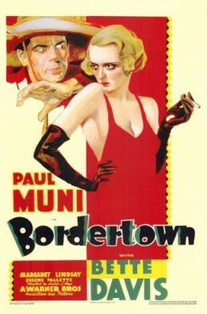

Bordertown
Starring: Paul Muni, Bette Davis, Margaret Lindsay
Director: Archie Mayo
Producer: Jack Warner
Bordertown is a 1935 American drama film directed by Archie Mayo and starring Paul Muni and Bette Davis. The screenplay by Laird Doyle and Wallace Smith is based on Robert Lord's adaptation of the 1934 novel Border Town by Carroll Graham. The supporting cast features Margaret Lindsay, Eugene Pallette and Robert Barrat.
Trivia
- Bordertown was one of the first films to come under the close scrutiny of the Hays Office, which finally was enforcing the Motion Picture Production Code introduced in 1930 to limit content seen as controversial or salacious.
- In the original script, Johnny Ramirez was disbarred for committing murder and had an affair with Marie Roark, two plot elements that had to be revised before the screenplay was approved.
- Leading man Paul Muni wanted either Carole Lombard or Lupe Vélez as his co-star, but after hearing the positive feedback his contract player Bette Davis was receiving for her performance in Of Human Bondage, which was in production at RKO, studio head Jack L. Warner decided to cast her in the role of Marie Roark.
Previous Showings
4 Runs • 2 Festivals
Original Billings: 1 run (February 15, 1935)
Original Run: February 15, 1935 (Friday - Saturday)
All runs on record (4):
- February 15, 1935 (Friday - Saturday)Paul Muni, Bette Davis
- May 24 - 25, 2008w/ The Petrified Forest
- February 24 - 25, 2011Winter 2011 Early Bette Davis, Val Lewton and morew/ Housewife
- May 24 - 25, 2018Bette Davis Complete early films: 1931 - 1938w/ The Petrified Forest